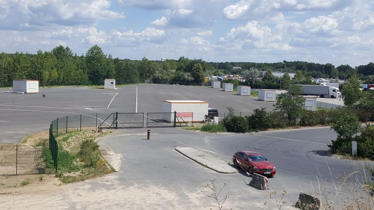
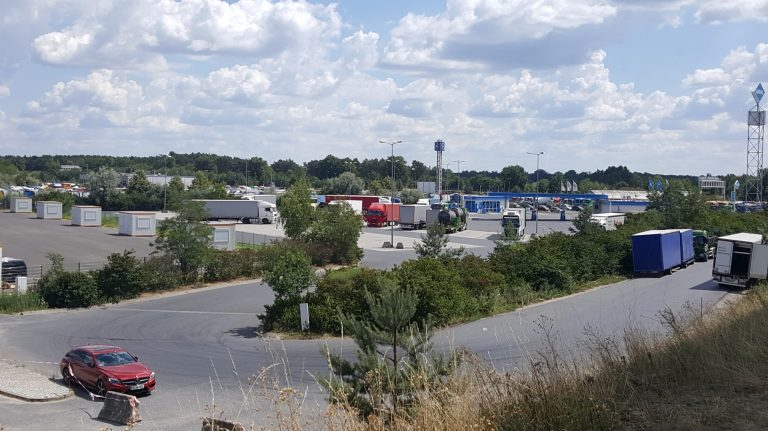
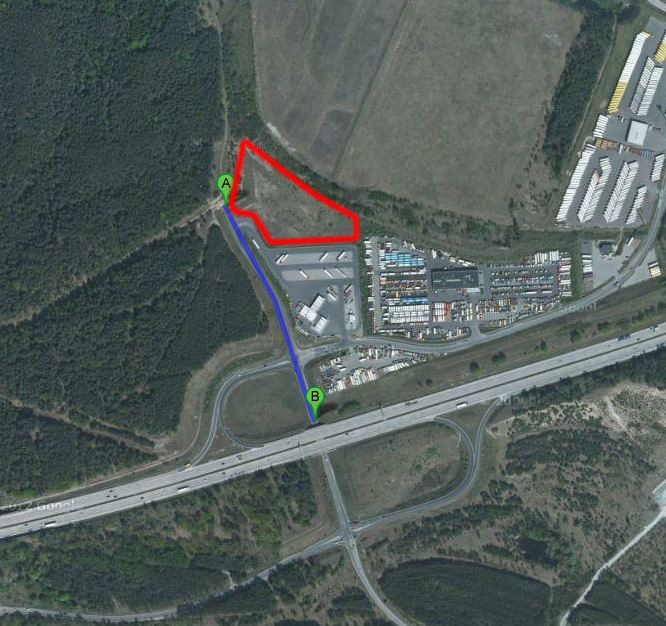
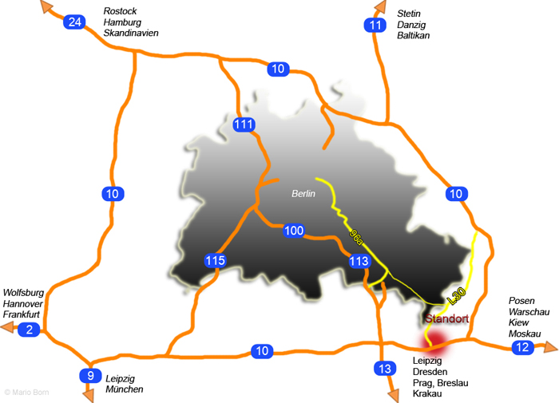

A10-GEBRAUCHTWAGENZENTRUM
Das A10-Gebrauchtwagenzentrum ist eines der größten Gebrauchtwagenzentren Berlins und bietet eine in der Hauptstadtregion Berlin wohl einmalige Auswahl an günstigen Gebrauchtfahrzeugen. Wer mit jedem Euro rechnet findet hier auf einem großen Auto-Marktplatz einen preiswerten Gebrauchtwagen zu einem wirklich angemessenen Preis. Die Lage dicht am Berliner Stadtrand und direkt an der Autobahnausfahrt Niederlehme der Bundesautobahn A10 macht dieses Autozenrum zu einem Publikumsmagnet der von Autokäufern aus allen Berliner Stadtteilen aber auch aus Brandenburg, Polen und Tschechien schnell erreichbar ist.
Im A10-Gebrauchtwagenzentrum finden sie eine reichhaltige Auswahl gebrauchter Kfz aller Fabrikate in guter Qualität. Die Ausstellungsfläche beträgt über 12.000 m². Unsere 12 Autohändler bieten Ihnen das für sie passende Fahrzeug aus einer Auswahl von über 1000 Fahrzeugen an. Sie finden vom hochwertigen fast neuen Gebrauchtwagen bis zum preiswerten mehrere Jahre alten Auto ein breites Sortiment aller Fahrzeugtypen und Fahrzeugklassen. Alle Fahrzeuge sind natürlich mit HU/AU (TÜV).
Sie können alle Fahrzeuge vor Ort gründlich besichtigen, Probefahrten sind nach Absprache selbstverständlich möglich.
Sie finden das Gebrauchtwagenzentrum direkt an der Bundesautobahn-A10-Ausfahrt Niederlehme. Es liegt am Segelfliegerdamm direkt neben der ARAL-Tankstelle an der nördlichen Autobahnseite. Wenn sie aus Fahrtrichtung von Osten vom Autobahndreieck Spreeau kommen, biegen sie am Ende der Autobahnausfahrt nach links ab in die Sackgasse neben der Aral-Tankstelle und sind nach 250 m am Ziel. Wenn sie aus der Fahrtrichtung Westen vom Schönefelder Autobahndreieck kommen biegen sie bei der Ampel am Ende Autobahn-Ausfahrt rechts ab, fahren unter der Autobahn durch und dann geradeaus bis sie nach 250 m am Ziel sind.
Gäste aus dem Berliner Stadtgebiet fahren über die Stadtautobahn Richtung Süden bis Schönefelder Kreuz, biegen dort ab in Richtung Frankfurt (Oder) und fahren an der Ausfahrt Niederlehme (2. Autobahnausfahrt nach dem Schönefelder Kreuz) ab und dann wie vorstehend beschrieben.
Wir haben noch freie Verkaufsplätze für Autoverkäufer
INFORMATION FÜR AUTOVERKÄUFER
Automarkt Berlin-Brandenburg an der Berliner Stadtgrenze in Königs Wusterhausen BAB-A10 Abfahrt Niederlehme
Der 1. Bauabschnitt mit ca. 12.500 m² Verkaufsfläche kann jetzt in Betrieb gehen.
Mit der Fertigstellung des 1. BA des Automarktes für Berlin und Brandenburg nahe der Berliner Stadtgrenze stehen in Kürze auf einem Areal von 15.500 m² direkt an der Autobahn „Berliner Ring“ BAB-A10-Ausfahrt Niederlehme attraktive Verkaufsflächen für Autohändler zur Verfügung. Innerhalb des Berliner Autobahnrings gelegen und somit noch im zentralen Entwicklungsbereich Berlins, zielt der Automarkt auf den regionalen und den Berliner Markt und insbesondere auch auf das nur 53 Autobahn- km entfernte Polen. Der Mietpreis für die Verkaufsflächen beträgt nur 1,50 €/m² Nutzfläche im Monat.
Der Ortsteil Niederlehme der Stadt Königs Wusterhausen hat sich bereits seit 2002 für den Berlin Brandenburger Raum als Nutzfahrzeugzentrum etabliert. Der Daimler Truck-Store, das Truckcenter von Schmitz-Cargo Bull, Henze Trucks oder der europaweite Nutzfahrzeug-vermieter und Gebrauchtnutzfahrzeughändler PEMA haben hier ihre Niederlassungen. Sie florieren bestens und sind ein Besuchermagnet für alle Nutzfahrzeuginteressenten. Dieses Zentrum hat sich wegen der Lage im Schnittpunkt der 4 Autobahnachsen – nach Osten über die A12, nach Nordosten über die A10/A11, nach Süden über die A13 und nach Westen für die A10/A2 bzw. A9 international bestens positioniert. Besucher aus ganz Deutschland, Tschechien, Polen, Slowakei, Ungarn, Ukraine, Weißrussland, Rumänien und Bulgarien kommen hierher wegen des europaweit einmaligen Angebotes an gebrauchten Nutzfahrzeugen. Das etablierte Nutzfahrzeugzentrum wird jetzt durch einen Automarkt für gebrauchte PKW erweitert. Der erste Bauabschnitt mit derzeit einer Fläche von ca. 15.500 m² sind im Bau. Für die Erweiterung soll eine Änderung des B-Planes „Industriegebiet Niederlehme“ erfolgen und im weiteren Ausbau dann eine Fläche von insgesamt ca. 35.000 m² zur Verfügung stehen.
Die exzellente Verkehrsanbindung können Sie sich auf dieser Internetpräsentation ansehen. Als Information für die Kunden (Privatkäufer und insbesondere Händler aus Polen und den angrenzenden osteuropäischen Staaten) werden nach Vermietung aller Verkaufsflächen die Internetauftritte „www.automarkt-Berlin-Brandenburg.de“ in deutsch/englisch/russisch/polnisch online gestellt.
Mit dem Neubau der Ortsumgehung Niederlehme, der jetzt Mitte 2019 erfolgt und mit einer prognostizierten Verkehrsdichte von 8000 bis 12000 Fahrzeugen pro Tag sich als neue Verkehrsachse in den Berliner Süden etablieren wird soll ein 2. Bauabschnitt mit weiteren Verkaufsflächen realisiert werden. Der Landesbetrieb Straßenwesen hat in der Planung eine eigene Abbiegespur von der L30 für den Automarkt vorgesehen. Direkt an der BAB-Aus- bzw. Einfahrt liegt die Aral-Tankstelle Niederlehme mit dem Autohof und daneben entlang der L30 der Automarkt, der durch die angrenzenden Bauarbeiten nicht eingeschränkt sein wird.
Zur Erhöhung der Sichtbarkeit des Automarktes von der Autobahn A10 erlaubt der B-Plan Werbepylone in notwendiger Höhe. Der Bau von Verwaltungsgebäuden ist im Erweiterungs-Bauabschnitt vorgesehen.
Die Verkaufsfläche und die Gestaltung des Automarktes sind flexibel und können an Größe und Platzbedarf der jeweiligen Autohändler angepasst werden. Es stehen moderne nach ENEV gedämmte Verkaufscontainer zur Miete zur Verfügung. Bau- und Nutzungsgenehmigung für den Automarkt liegen vor. Die Bauarbeiten werden sind im Juli 2018 abgeschlossen, so dass mit einem zeitnahen Betriebsbeginn gerechnet werden kann.
Ein gemeinsames Marketing des Automarktes erfolgt durch die Betreibergesellschaft. Insbesondere durch die nur 53 km nahe liegende polnische Grenze sollte das Marketing auf das Nachbarland Polen ausgeweitert werden. Die Gebrauchtwagenpreise sind in Polen deutlich höher als in Deutschland, von daher suchen viele polnische Autokäufer im nahen Berlin nach gebrauchten PKW´s. Eine polnisch sprechende und schreibende Mitarbeiterin steht in der Betreibergesellschaft zur Verfügung.
Der bereits seit 1995 rechtskräftige B-Plan erlaubt eine 3-geschossige Bebauung über bis 80% der Fläche. Insofern kann bei entsprechenden Erfolgen des Automarktes die Kapazität durch bauliche Maßnahmen nach Bedarf erhöht werden.
Im Erweiterungsbauabschnitt ist dann der Bau eines Verwaltungsgebäudes, Gastronomie und weitere Einrichtungen vorgesehen. Der jetzt zu Anfang Juli fertig werdende 1. Bauabschnitt ist asphaltiert, eingezäunt und mit einer zentralen Toilettenanlage ausgestattet.
Für weitere Auskünfte stehe ich Ihnen gerne zur Verfügung und bitte um Ihren Anruf oder Kontaktaufnahme per e-mail. Wir würden uns über Ihr Interesse an unserem Mietangebot für Verkaufsflächen für Pkw freuen und erwarten gerne Ihren Anruf. Sie finden das Angebot auch provisionsfrei auf Immobilienscout.de unter „Miete Gewerbegrundstücke“.
Ihr Ansprechpartner :
Maxima Vermietung A10
Tel. 0157 77 77 34 37
E-Mail: maximavermietung@gmail.com


Lage
SEGELFLIEGERDAMM 23 (Nördlich der ARAL-Tankstelle)
15713 KÖNIGS WUSTERHAUSEN OT NIEDERLEHME
DAHME-SPREEWALD (KREIS)
Bundesautobahn A10 (Berliner Ring) Abfahrt Niederlehme (Nordseite)
Das Gebrauchtwagenzentrum befindet sich in direkter Nachbarschaft zum Daimler-Gebraucht-LKW-Zentrum Niederlehme (Daimler Truck Store) und einer Reihe weiterer LKW-Händler wie z. B. Iveco. Daneben finden sich eine LKW-Waschanlage und ein europaweit vertretener Vermieter von Nutzfahrzeugen. Das A10-Gebrauchtwagenzentrum ergänzt das Angebot an gebrauchten Nutzfahrzeugen in Königs Wusterhausen nunmehr noch um den gebrauchten PKW-Bereich.

Der Abstand A – B zu BAB A10 beträgt 350m
Strategische Lage des A10-Gebrauchtwagenzentrums überregional an den Verkehrsachsen zu den in-und ausländischen Wirtschaftszentren

| direkte Autobahnentfernungen von Königs Wusterhausen OT Niederlehme: | |
|---|---|
| A11 | |
| Stettin (PL) | 174 km |
| Danzig (PL) | 531 km |
| Baltikum (LT, LV, EE) | 988 km |
| A12 | |
| Posen (PL) | 174 km |
| Warschau (PL) | 552 km |
| Kiew (UA) | 1286 km |
| Moskau (RU) | 1812 km |
| A13 | |
| Dresden (PL) | 170 km |
| Breslau (PL) | 322 km |
| Prag (CZ) | 332 km |
| Krakau (PL) | 576 km |
| A9 | |
| Leipzig (Flughafen) | 192 km |
| Nürnberg | 443 km |
| München (Flughafen) | 588 km |
| A2 | |
| Wolfsburg | 230 km |
| Hannover | 290 km |
| Frankfurt/Main | 549 km |
| A24 | |
| Rostock | 271 km |
| Hamburg | 331 km |
| Skandinavien (DK, SE, NO, FI) | |
Lage des A10-Grbauchtwagenzentrums regional im engeren Berliner Verflechtungsraum der Landesplanung Entfernungen des A10-Grbauchtwagenzentrums zu …
- Berlin Zentrum Alexanderplatz – 35 km
- Berlin-Stadtgrenze Luftlinie – 800 m
- Berlin-Stadtgrenze mit Kfz über L30 nach Treptow/Schmöckwitz 15 km
- Flughafen Berlin – BER über A10/A113 10km
- Berlin-Hauptbahnhof mit Kfz 40 km
- Bundesstraße B179 – 10 km
- Autobahn BAB A10 – eigene Autobahnabfahrt „Niederlehme“
- Bahnhof, Fern- und Regionalbahnen, Berliner S-Bahn
- Königs Wusterhausen – 5 km
- Binnenhafen Königs Wusterhausen
- Hafenteil Niederlehme – 3 km
- Hafenteil Wildau – 3 km
- Fahrzeit mit der Regionalbahn vom Bahnhof Königs Wusterhausen nach Berlin-HBF: 35 min
- Fahrzeit mit PKW zum Bahnhof Königs Wusterhausen 10 min
- Einkaufszentrum: überregionales Shopping-Center A10-Center mit Bauhaus, Pflanzen-Kölle sowie Kino-und Freizeitzentrum – 4 km (Fahrzeit 4 min über BAB A10)
Kommunen im Nahbereich der Stadt Königs Wusterhausen
- Berlin
- Erkner
- Heidesee
- Wildau
- Fürstenwalde
- Frankfurt/Oder
- Storkow
- Rangsdorf
- Zossen
- Ludwigsfelde